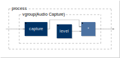
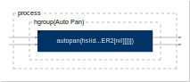
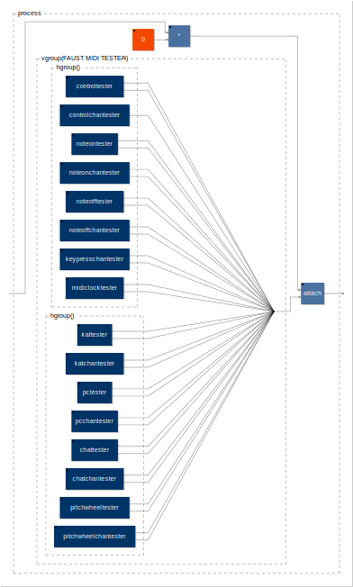
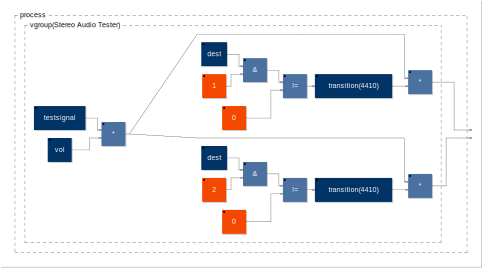
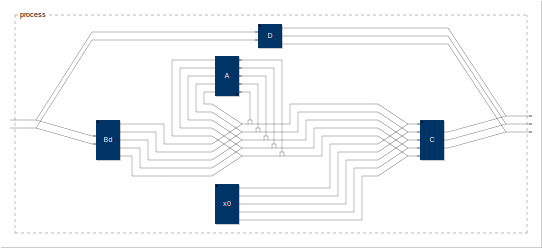
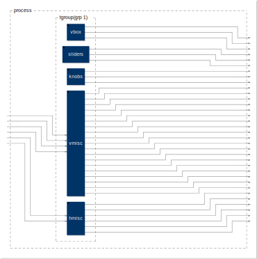
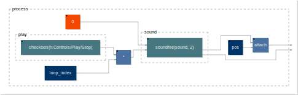

misc
UITester

declare name "UITester";
declare version "1.0";
declare author "O. Guillerminet";
declare license "BSD";
declare copyright "(c) O. Guillerminet 2012";
vbox = vgroup("vbox",
checkbox("check1"),
checkbox("check2"),
nentry("knob0[style:knob]", 60, 0, 127, 0.1));
sliders = hgroup("sliders",
vslider("vslider1", 60, 0, 127, 0.1),
vslider("vslider2", 60, 0, 127, 0.1),
vslider("vslider3", 60, 0, 127, 0.1));
knobs = hgroup("knobs",
vslider("knob1[style:knob]", 60, 0, 127, 0.1),
vslider("knob2[style:knob]", 60, 0, 127, 0.1),
vslider("knob3[style:knob]", 60, 0, 127, 0.1));
smallhbox1 = hgroup("small box 1",
vslider("vslider5 [unit:Hz]", 60, 0, 127, 0.1),
vslider("vslider6 [unit:Hz]", 60, 0, 127, 0.1),
vslider("knob4[style:knob]", 60, 0, 127, 0.1),
nentry("num1 [unit:f]", 60, 0, 127, 0.1),
vbargraph("vbar1", 0, 127));
smallhbox2 = hgroup("small box 2",
vslider("vslider7 [unit:Hz]", 60, 0, 127, 0.1),
vslider("vslider8 [unit:Hz]", 60, 0, 127, 0.1),
vslider("knob5[style:knob]", 60, 0, 127, 0.1),
nentry("num2 [unit:f]", 60, 0, 127, 0.1),
vbargraph("vbar2", 0, 127));
smallhbox3 = hgroup("small box 3",
vslider("vslider9 [unit:Hz]", 60, 0, 127, 0.1),
vslider("vslider10 [unit:m]", 60, 0, 127, 0.1),
vslider("knob6[style:knob]", 60, 0, 127, 0.1),
nentry("num3 [unit:f]", 60, 0, 127, 0.1),
vbargraph("vbar3", 0, 127));
subhbox1 = hgroup("sub box 1",
smallhbox2,
smallhbox3);
vmisc = vgroup("vmisc",
vslider("vslider4 [unit:Hz]", 60, 0, 127, 0.1),
button("button"),
hslider("hslider [unit:Hz]", 60, 0, 127, 0.1),
smallhbox1,
subhbox1,
hbargraph("hbar", 0, 127));
hmisc = hgroup("hmisc",
vslider("vslider4 [unit:f]", 60, 0, 127, 0.1),
button("button"),
hslider("hslider", 60, 0, 127, 0.1),
nentry("num [unit:f]", 60, 0, 127, 0.1),
vbargraph("vbar", 0, 127),
hbargraph("hbar", 0, 127));
//------------------------- Process --------------------------------
process = tgroup("grp 1",
vbox,
sliders,
knobs,
vmisc,
hmisc);
capture

declare name "capture";
declare version "1.0";
declare author "Grame";
declare license "BSD";
declare copyright "(c)GRAME 2006";
//-------------------------------------------------
// Capture : record up to 8s of sound and
// playback the recorded sound in loop
//-------------------------------------------------
import("stdfaust.lib");
B = button("Capture"); // Capture sound while pressed
I = int(B); // convert button signal from float to integer
R = (I-I') <= 0; // Reset capture when button is pressed
D = (+(I):*(R))~_; // Compute capture duration while button is pressed: 0..NNNN0..MMM
capture = *(B) : (+ : de.delay(8*65536, D-1)) ~ *(1.0-B);
level = hslider("level (db)", 0, -96, 4, 0.1) : ba.db2linear : si.smoo;
process = vgroup("Audio Capture", capture : *(level));
matrix

declare name "matrix";
declare version "1.0";
declare author "Grame";
declare license "BSD";
declare copyright "(c)GRAME 2006";
//-----------------------------------------------
// Audio Matrix : N inputs x M outputs
//-----------------------------------------------
import("stdfaust.lib");
Fader(in) = ba.db2linear(vslider("Input %in", -10, -96, 4, 0.1));
Mixer(N,out) = hgroup("Output %out", par(in, N, *(Fader(in)) ) :> _ );
Matrix(N,M) = tgroup("Matrix %N x %M", par(in, N, _) <: par(out, M, Mixer(N, out)));
process = Matrix(8, 8);
midiTester
declare name "midiTester";
declare version "1.0";
declare author "Vincent Rateau, GRAME";
declare license "GPL v3";
declare reference "www.sonejo.net";
// FAUST MIDI TESTER
process = _*0, (vgroup("FAUST MIDI TESTER", hgroup("[1]", controltester, controlchantester, noteontester, noteonchantester, noteofftester, noteoffchantester, keypresschantester, midiclocktester), hgroup("[2]", kattester, katchantester, pctester, pcchantester, chattester, chatchantester, pitchwheeltester, pitchwheelchantester) :> _)) : attach;
///////////////////////////
//Ctrl tester (ctrl ): tester(midi in, midi out)
controltester = vgroup("CTRL IN/OUT", valuetest(50,51), booltest(100,101))
with {
valuetest(i,o) = hslider("Ctrl Value IN (Ctrl %i) [midi:ctrl %i]", 60, 0, 127, 1) : hbargraph("Ctrl Value OUT (Ctrl %o) [midi:ctrl %o]", 0, 127);
booltest(i,o) = checkbox("Ctrl Bool IN (Ctrl %i) [midi:ctrl %i]") : hbargraph("Ctrl Bool OUT (Ctrl %o) [midi:ctrl %o]", 0, 1);
};
//Ctrl Chan tester (ctrl chan): tester(midi in, midi out)
controlchantester = vgroup("CTRL CHAN IN/OUT", valuetest(50,2,74,3))
with {
valuetest(i,ic,o,oc) = hslider("Ctrl Value IN (Ctrl %i Channel %ic) [midi:ctrl %i %ic]", 60, 0, 127, 1) : hbargraph("Ctrl Value OUT (Ctrl %o) Channel OUT(Chan %oc) [midi:ctrl %o %oc]", 0, 127);
};
//Note tester (keyon) : tester(midi in, midi out)
noteontester = vgroup("NOTE ON IN/OUT", valuetest(50,51), booltest(100,101))
with {
valuetest(i,o) = hslider("NoteOn Value IN (Note %i) [midi:keyon %i]", 60, 0, 127, 1) : hbargraph("NoteOn Value OUT (Note %o) [midi:keyon %o]", 0, 127);
booltest(i,o) = checkbox("NoteOn Bool IN (Note %i) [midi:keyon %i]") : hbargraph("NoteOn Bool OUT (Note %o) [midi:keyon %o]", 0, 1);
};
//Note Chan tester (keyon) : tester(midi in, midi out)
noteonchantester = vgroup("NOTE ON CHAN IN/OUT", valuetest(50, 2, 51, 3), booltest(50, 2, 101, 3))
with {
valuetest(i, ic, o, oc) = hslider("NoteOn Value IN (Note %i Channel %ic) [midi:keyon %i %ic]", 60, 0, 127, 1) : hbargraph("NoteOn Value OUT (Note %o Chan %oc) [midi:keyon %o %oc]", 0, 127);
booltest(i, ic, o, oc) = checkbox("NoteOn Chan Bool IN (Note %i Channel %ic) [midi:keyon %i %ic]") : hbargraph("NoteOn Chan Bool OUT (Note %o Channel %oc) [midi:keyon %o %oc]", 0, 1);
};
//Note tester (keyoff) : tester(midi in, midi out)
noteofftester = vgroup("NOTE OFF IN/OUT", valuetest(50,51), booltest(100,101))
with {
valuetest(i,o) = hslider("NoteOff Value IN (Note %i) [midi:keyoff %i]", 60, 0, 127, 1) : hbargraph("NoteOff Value OUT (Note %o) [midi:keyoff %o]", 0, 127);
booltest(i,o) = checkbox("NoteOff Bool IN (Note %i) [midi:keyoff %i]") : hbargraph("NoteOff Bool OUT (Note %o) [midi:keyoff %o]", 0, 1);
};
//Note Chan tester (keyoff) : tester(midi in, midi out)
noteoffchantester = vgroup("NOTE OFF CHAN IN/OUT", valuetest(50, 2, 51, 3), booltest(50, 2, 101, 3))
with {
valuetest(i, ic, o, oc) = hslider("NoteOff Value IN (Note %i Channel %ic) [midi:keyoff %i %ic]", 60, 0, 127, 1) : hbargraph("NoteOff Value OUT (Note %o Channel %oc) [midi:keyoff %o %oc]", 0, 127);
booltest(i, ic, o, oc) = checkbox("NoteOff Bool IN (Note %i Channel %ic) [midi:keyoff %i %ic]") : hbargraph("NoteOff Bool OUT (Note %o Channel %oc) [midi:keyoff %o %oc]", 0, 1);
};
//KeyPress Chan tester (keypress) : tester(midi in, midi out)
keypresschantester = vgroup("KEY PRESS CHAN IN/OUT", valuetest(50, 2, 51, 3), booltest(50, 2, 101, 3))
with {
valuetest(i, ic, o, oc) = hslider("Pressure Value IN (Note %i Channel %ic) [midi:keypress %i %ic]", 60, 0, 127, 1) : hbargraph("Note Value OUT (Note %o Channel %oc) [midi:keypress %o %oc]", 0, 127);
booltest(i, ic, o, oc) = checkbox("Pressure Bool IN (Note %i Channel %ic) [midi:keypress %i %ic]") : hbargraph("Pressure Bool OUT (Note %o Channel %oc) [midi:keypress %o %oc]", 0, 1);
};
//Midisync tester
midiclocktester = vgroup("MIDI SYNC (IN)", clock, startstop)
with {
clock = checkbox("MIDI clock signal [midi:clock]");
startstop = checkbox("MIDI START/STOP [midi:start] [midi:stop]");
};
//Key Aftertouch tester (keypress) : tester(midi in, midi out)
kattester = vgroup("KEY AFTERTOUCH (KAT) IN/OUT",valuetest(50,51), booltest(100,101))
with {
valuetest(i,o) = hslider("Note KAT Value IN (Note %i) [midi:keypress %i]", 60, 0, 127, 1) : hbargraph("Note KAT Value OUT (Note %o) [midi:keypress %o]", 0, 127);
booltest(i,o) = checkbox("Note KAT Bool IN (Note %i) [midi:keypress %i]") : hbargraph("Note KAT Bool OUT (Note %o) [midi:keypress %o]", 0, 1);
};
//Key Aftertouch tester (keypress) : tester(midi in, midi out)
katchantester = vgroup("KEY AFTERTOUCH CHAN (KAT) IN/OUT",valuetest(50,2,51,3), booltest(100,2,101,3))
with {
valuetest(i,ic,o,oc) = hslider("Note KAT Value IN (Note %i) (Chan %ic) [midi:keypress %i %ic]", 60, 0, 127, 1) : hbargraph("Note KAT Value OUT (Note %o) (Chan %oc) [midi:keypress %o %oc]", 0, 127);
booltest(i,ic,o,oc) = checkbox("Note KAT Bool IN (Note %i) (Chan %ic) [midi:keypress %i %ic]") : hbargraph("Note KAT Bool OUT (Note %o) (Chan %oc)[midi:keypress %o %oc]", 0, 1);
};
//ProgramChange tester (pgm) : tester(midi in, midi out)
pctester = vgroup("PROGRAM CHANGE (PC) IN/OUT",valuetest(1,2), booltest(1,2))
with {
valuetest(i,o) = hslider("ProgramChange Value IN (PC %i) [midi:pgm %i]", 60, 0, 127, 1) : hbargraph("ProgramChange Value OUT (PC %o) [midi:pgm %o]", 0, 127);
booltest(i,o) = checkbox("ProgramChange Bool IN (PC %i) [midi:pgm %i]") : hbargraph("ProgramChange Bool OUT (PC %o) [midi:pgm %o]", 0, 1);
};
//ProgramChange Chan tester (pgm) : tester(midi in, midi out)
pcchantester = vgroup("PROGRAM CHANGE CHAN (PC) IN/OUT",valuetest(1, 2, 2, 3), booltest(1, 2, 2, 3))
with {
valuetest(i,ic,o,oc) = hslider("ProgramChange Value IN (PC %i) (CHAN %ic) [midi:pgm %i %ic]", 60, 0, 127, 1) : hbargraph("ProgramChange Value OUT (PC %o) (CHAN %oc) [midi:pgm %o %oc]", 0, 127);
booltest(i,ic,o,oc) = checkbox("ProgramChange Bool IN (PC %i) (CHAN %ic) [midi:pgm %i %ic]") : hbargraph("ProgramChange Bool OUT (PC %o) (CHAN %oc) [midi:pgm %o %oc]", 0, 1);
};
//Channel Aftertourch tester (chanpress) : tester(midi in, midi out)
chattester = vgroup("CHANNEL AFTERTOUCH (CHAT) IN/OUT",valuetest(50,51), booltest(100,101))
with {
valuetest(i,o) = hslider("Note CHAT Value IN (Note %i) [midi:chanpress %i]", 60, 0, 127, 1) : hbargraph("Note CHAT Value OUT (Note %o) [midi:chanpress %o]", 0, 127);
booltest(i,o) = checkbox("Note CHAT Bool IN (Note %i) [midi:chanpress %i]") : hbargraph("Note CHAT Bool OUT (Note %o) [midi:chanpress %o]", 0, 1);
};
//Channel Aftertourch tester (chanpress) : tester(midi in, midi out)
chatchantester = vgroup("CHANNEL AFTERTOUCH CHAN (CHAT) IN/OUT",valuetest(50,2,51,3), booltest(100,2,101,3))
with {
valuetest(i,ic,o,oc) = hslider("Note CHAT Chan Value IN (Note %i) (Chan %ic) [midi:chanpress %i %ic]", 60, 0, 127, 1) : hbargraph("Note CHAT Value OUT (Note %o) (Chan %oc) [midi:chanpress %o %oc]", 0, 127);
booltest(i,ic,o,oc) = checkbox("Note CHAT Bool IN (Note %i) (Chan %ic) [midi:chanpress %i %ic]") : hbargraph("Note CHAT Bool OUT (Note %o) (Chan %oc) [midi:chanpress %o %oc]", 0, 1);
};
//Pitchwheel tester (pitchwheel) : tester(midi in, midi out)
pitchwheeltester = vgroup("PITCHWHEEL IN/OUT",valuetest, booltest)
with {
valuetest = hslider("Pitchwheel Value IN [midi:pitchwheel]", 0, -8192, 8191, 1) : hbargraph("Pitchwheel Value OUT[midi:pitchwheel]", -8192, 8191);
booltest = checkbox("Pitchwheel Bool IN [midi:pitchwheel]") : hbargraph("Pitchwheel Bool OUT [midi:pitchwheel]", 0, 1);
};
//Pitchwheel Chan tester (pitchwheel) : tester(midi in, midi out)
pitchwheelchantester = vgroup("PITCHWHEEL CHAN IN/OUT",valuetest(2, 15), booltest(2, 15))
with {
valuetest(ic, oc) = hslider("Pitchwheel Value IN (Chan %ic) [midi:pitchwheel %ic]", 0, -8192, 8191, 1) : hbargraph("Pitchwheel Value OUT (Chan %oc)[midi:pitchwheel %oc]", -8192, 8191);
booltest(ic, oc) = checkbox("Pitchwheel Bool IN (Chan %ic) [midi:pitchwheel %ic]") : hbargraph("Pitchwheel Bool OUT (Chan %oc) [midi:pitchwheel %oc]", 0, 1);
};
statespace

declare name "statespace";
declare version "1.0";
declare author "JOS";
declare license "MIT";
declare copyright "(c) Julius O. Smith III, 2020";
//-----------------------------------------------
// General Linear State-Space Model Example
//-----------------------------------------------
import("stdfaust.lib");
p = 2; // number of inputs
q = 3; // number of outputs
N = 5; // number of states
A = matrix(N,N); // state transition matrix
B = matrix(N,p); // input-to-states matrix
C = matrix(q,N); // states-to-output matrix
D = matrix(q,p); // direct-term matrix, bypassing state
// ./matrix.dsp with M and N transposed to follow convention:
matrix(M,N) = tgroup("Matrix: %M x %N", par(in, N, _)
<: par(out, M, mixer(N, out))) with {
fader(in) = ba.db2linear(vslider("Input %in", -10, -96, 4, 0.1));
mixer(N,out) = hgroup("Output %out", par(in, N, *(fader(in)) ) :> _ );
};
Bd = par(i,p,mem) : B; // input delay needed for conventional definition
vsum(N) = si.bus(2*N) :> si.bus(N); // vector sum of two N-vectors
// Illustrate nonzero initial state, following conventional definition:
impulse = 1-1'; // For zero initial state, set impulse = 0 or simplify code
x0 = par(i,N,i*impulse); // initial state = (0,1,2,3,...,N-1)
system = si.bus(p) <: D, (Bd : vsum(N)~(A), x0 : vsum(N) : C) :> si.bus(q);
process = system;
switcher

declare name "switcher";
declare version "1.0";
declare author "Grame";
declare license "BSD";
declare copyright "(c)GRAME 2007";
//-----------------------------------------------
// Switch between two stereo sources.
// Useful to compare these two sources
// The parameter c\in{0,1} indicates the
// channels to select
//-----------------------------------------------
switch(c,x0,x1,y0,y1) = sel(c,x0,y0), sel(c,x1,y1)
with {
sel(c,x,y) = (1-c)*x + c*y;
};
process = switch(hslider("source 0 <-> source 1",0,0,1,1));
tester

declare name "tester";
declare version "1.0";
declare author "Grame";
declare license "BSD";
declare copyright "(c)GRAME 2006";
//-----------------------------------------------
// Tester : tests louspeakers
// Send a test signal( sine, noise, pink) to one
// of 8 loudspeakers
//-----------------------------------------------
import("stdfaust.lib");
// TODO: this should be rewritten with the pink noise function of noises.lib
pink = f : (+ ~ g) with {
f(x) = 0.04957526213389*x - 0.06305581334498*x' + 0.01483220320740*x'';
g(x) = 1.80116083982126*x - 0.80257737639225*x';
};
// User interface
//----------------
vol = hslider("[2] volume [unit:dB]", -96, -96, 0, 1): ba.db2linear : si.smoo;
freq = hslider("[1] freq [unit:Hz]", 1000, 10, 20000, 1);
dest = hslider("[3] destination", 0, 0, 8, 1);
testsignal = os.osci(freq)*checkbox("sine wave")
+ no.noise * checkbox("white noise")
+ pink(no.noise) * ba.db2linear(20) * checkbox("pink noise");
process = vgroup( "Audio Tester",
testsignal*vol
<: par(i, 8, *(dest==i))
);
tester2

declare name "tester2";
declare version "1.0";
declare author "Grame";
declare license "BSD";
declare copyright "(c)GRAME 2014";
//-----------------------------------------------
// Stereo Audio Tester : send a test signal (sine,
// noise, pink) on a stereo channel
//-----------------------------------------------
import("stdfaust.lib");
pink = f : (+ ~ g) with {
f(x) = 0.04957526213389*x - 0.06305581334498*x' + 0.01483220320740*x'';
g(x) = 1.80116083982126*x - 0.80257737639225*x';
};
// User interface
//----------------
transition(n) = \(old,new).(ba.if(old<new, min(old+1.0/n,new), max(old-1.0/n,new))) ~ _;
vol = hslider("[2] volume [unit:dB]", -96, -96, 0, 1): ba.db2linear : si.smoo;
freq = hslider("[1] freq [unit:Hz][scale:log]", 440, 40, 20000, 1);
wave = nentry("[3] signal [style:menu{'white noise':0;'pink noise':1;'sine':2}]", 0, 0, 2, 1) : int;
dest = nentry("[4] channel [style:radio{'none':0;'left':1;'right':2;'both':3}]", 0, 0, 3, 1) : int;
testsignal = no.noise, pink(no.noise), os.osci(freq): select3(wave);
process = vgroup("Stereo Audio Tester",
testsignal*vol
<: par(i, 2, *((dest & (i+1)) != 0 : transition(4410)))
);